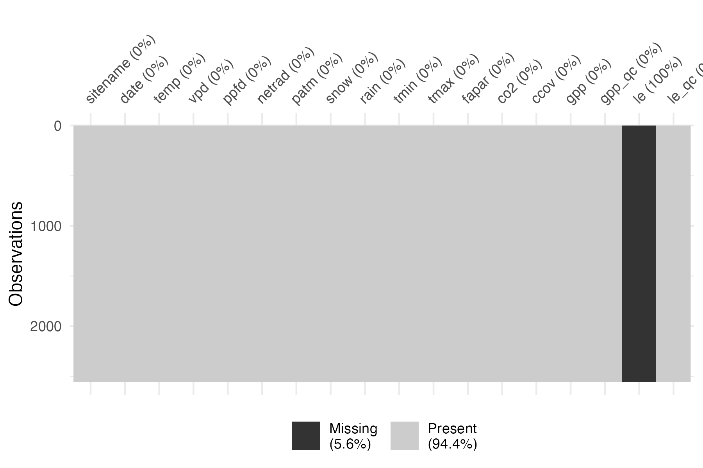
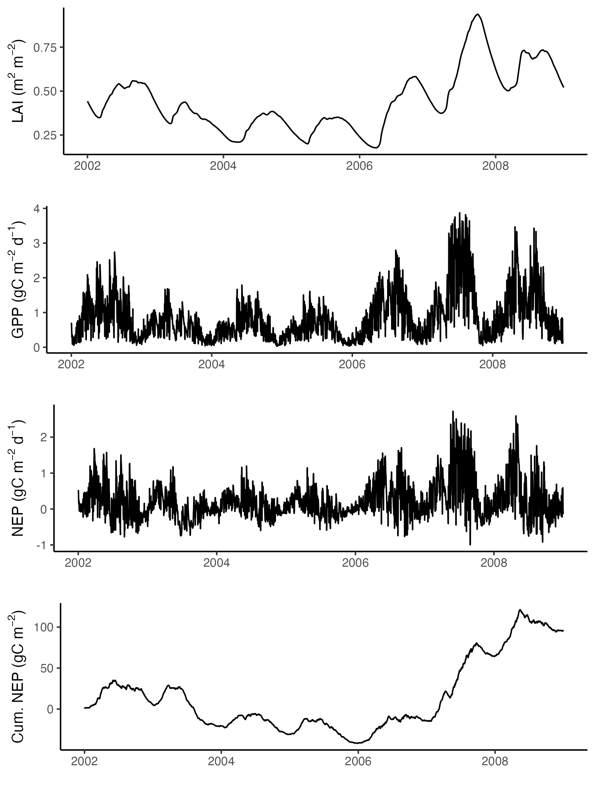

C-only and CN-model at a FLUXNET site
Beni Stocker
Source:vignettes/cnmodel_fluxnet.Rmd
cnmodel_fluxnet.Rmd
# some general libraries
library(dplyr)
library(tidyr)
library(ggplot2)
library(readr)
library(lubridate)
library(cowplot)
library(visdat)
library(here)Aim
Demonstrate the use of the CN-model, including its C-only setup, for simulating ecosystem fluxes, growth, biomass, ecosystem C balance and N cycling at a single site. Here, we use CH-Oe2 - a managed grassland in Switzerland.
Installation
{rsofun} is not on CRAN. The development version of CN-model lives in a branch on GitHub of the {rsofun} fork by stineb (Beni Stocker). Install it from there.
if(!require(remotes)){install.packages(remotes)}
remotes::install_github("stineb/rsofun", ref = "cnmodel")
library(rsofun)Forcing data
Climate
Climate forcing data can be obtained from the FluxDataKit {rsofun} driver object. The model driver object is constructed from data collected and processed (unit conversion, some limited additional gap-filling) from FLUXNET-standard data, obtained from regional networks and previous collection efforts (ICOS, AmeriFlux, PLUMBER-2, etc). The model driver object is made available on Zenodo:
Hufkens, K., & Stocker, B. (2024). FluxDataKit v3.1: A comprehensive data set of ecosystem fluxes for land surface modelling (3.1) [Data set]. Zenodo. https://doi.org/10.5281/zenodo.11370417
Download the file rsofun_driver_data_v3.1.rds and place
it locally. It is not included in the repository rsofundemo.
Read it, pointing to its local path, and subset to the desired site.
driver <- readRDS("~/data/FluxDataKit/v3.2/rsofun_driver_data_v3.2.rds") |>
filter(sitename == "CH-Oe1")Check for missing values in the forcing data.

We see that some variables have missing data. Net radiation being missing is not a problem as it is currently internally estimated and not taken from the forcing.
Nitrogen deposition
Reactive N inputs from atmospheric deposition and/or mineral N fertiliser applications needs to be prescribed in gN added per day. This information is added to the forcing time series. That means, we need to specify how much N is added on which day. For atmospheric N deposition, monthly or annual totals may be either evenly distributed among days in a year or added in proportion to precipitation.
In this example, we simply add a constant rate on each day. The value used here is obtained as the annual total for respective years from Lamarque et al., divided by 365.
Harvesting
When applying the CN-model for simulating C and N dynamics in a
grassland, the harvesting of biomass (and its export off-site) needs to
be accounted for. The fraction of aboveground biomass harvested per day
needs to be specified in the forcing time series. Let’s assume that
nothing is harvested (fharv = 0).
Also N (and C) additions in the form of new seeds added to the field
after harvesting are accounted for (cseed and
nseed).
use_cseed <- 5
cn_seed <- 20
use_nseed <- use_cseed / cn_seed
driver <- driver |>
mutate(
forcing = purrr::map(
forcing, ~mutate(
.,
fharv = ifelse(month(date) == 7 & mday(date) == 15, 0.0, 0.0),
cseed = ifelse(month(date) == 2 & mday(date) == 15, use_cseed, 0.0),
nseed = ifelse(month(date) == 2 & mday(date) == 15, use_nseed, 0.0)))
)Simulation parameters
The spinup of the CN-model must be long enough to equilibrate fluxes. The model spin-up procedure is explained in Stocker & Prentice (2024) biorxiv. It is set to 2002 years here. During the spinup, the first five years of the model forcing time series are recycled such that an entire recycling period is terminated at the end of the last spin-up year. This temporal alignment is treated automatically by the CN-model.
driver$params_siml[[1]]$spinupyears <- 2002
driver$params_siml[[1]]$recycle <- 5Model parameters
The list of model parameters for the CN-model is long and (almost all) explained in Stocker & Prentice (2024) biorxiv.
pars <- list(
# P-model
kphio = 0.04998, # setup ORG in Stocker et al. 2020 GMD
kphio_par_a = 0.0, # set to zero to disable temperature-dependence of kphio
kphio_par_b = 1.0,
soilm_thetastar = 0.6 * 240, # to recover old setup with soil moisture stress
soilm_betao = 0.0,
beta_unitcostratio = 146.0,
rd_to_vcmax = 0.014, # value from Atkin et al. 2015 for C3 herbaceous
tau_acclim = 30.0,
kc_jmax = 0.41,
# Plant
f_nretain = 0.500000,
fpc_tree_max = 0.950000,
growtheff = 0.600000,
r_root = 2*0.913000,
r_sapw = 2*0.044000,
exurate = 0.003000,
k_decay_leaf = 1.90000,
k_decay_root = 1.90000,
k_decay_labl = 1.90000,
k_decay_sapw = 1.90000,
r_cton_root = 37.0000,
r_cton_wood = 100.000,
r_cton_seed = 15.0000,
nv_vcmax25 = 0.02 * 13681.77, # see ln_cn_review/vignettes/analysis_leafn_vcmax_field.Rmd, l.695; previously: 5000.0,
ncw_min = 0.08 * 1.116222, # see ln_cn_review/vignettes/analysis_leafn_vcmax_field.Rmd, l.691; previously used: 0.056,
r_n_cw_v = 0, # assumed that LMA is independent of Vcmax25; previously: 0.1,
r_ctostructn_leaf = 1.3 * 45.84125, # see ln_cn_review/vignettes/analysis_leafn_vcmax_field.Rmd, l.699; previously used: 80.0000,
kbeer = 0.500000,
# Phenology (should be PFT-specific)
gddbase = 5.0,
ramp = 0.0,
phentype = 2.0,
# Soil physics (should be derived from params_soil, fsand, fclay, forg, fgravel)
perc_k1 = 5.0,
thdiff_wp = 0.2,
thdiff_whc15 = 0.8,
thdiff_fc = 0.4,
forg = 0.01,
wbwp = 0.029,
por = 0.421,
fsand = 0.82,
fclay = 0.06,
fsilt = 0.12,
# Water and energy balance
kA = 107,
kalb_sw = 0.17,
kalb_vis = 0.03,
kb = 0.20,
kc = 0.25,
kCw = 1.05,
kd = 0.50,
ke = 0.0167,
keps = 23.44,
kWm = 220.0,
kw = 0.26,
komega = 283.0,
maxmeltrate = 3.0,
# Soil BGC
klitt_af10 = 1.2,
klitt_as10 = 0.35,
klitt_bg10 = 0.35,
kexu10 = 50.0,
ksoil_fs10 = 0.021,
ksoil_sl10 = 7.0e-04,
ntoc_crit1 = 0.45,
ntoc_crit2 = 0.76,
cton_microb = 10.0,
cton_soil = 9.77,
fastfrac = 0.985,
# N uptake
eff_nup = 0.0001000,
minimumcostfix = 1.000000,
fixoptimum = 25.15000,
a_param_fix = -3.62000,
b_param_fix = 0.270000,
# Inorganic N transformations (re-interpreted for simple ntransform model)
maxnitr = 0.00005,
# Inorganic N transformations for full ntransform model (not used in simple model)
non = 0.01,
n2on = 0.0005,
kn = 83.0,
kdoc = 17.0,
docmax = 1.0,
dnitr2n2o = 0.01,
# Additional parameters - previously forgotten
frac_leaf = 0.5, # after wood allocation
frac_wood = 0, # highest priority in allocation
frac_avl_labl = 0.1,
# for development
tmppar = 9999,
# simple N uptake module parameters
nuptake_kc = 600,
nuptake_kv = 5,
nuptake_vmax = 0.2
)Run the model
Before running the model, we need to create an output directory for soil C.
system(paste0("mkdir ", here::here(), "/out"))
system(paste0("mkdir ", here::here("vignettes"), "/out"))C-only run
The model can be run in C-only mode. That is, N is still calculated, but its balance is not considered for affecting allocation. Its balance is not closed.
# Define whether to use interactive C-N cycling
driver$params_siml[[1]]$c_only <- TRUEWith all data prepared we can now run the P-model using the function
runread_cnmodel_f() from the {rsofun} package. This
function takes the nested data structure and runs the model site by
site, returning nested model output results matching the input
drivers.
output <- runread_cnmodel_f(
driver,
par = pars
)Some outputs
#### LAI -----------------------------
gg1 <- output$data[[1]] |>
as_tibble() |>
ggplot(aes(date, lai)) +
geom_line() +
labs(x = "", y = expression(paste("LAI (m"^2, " m"^-2, ")"))) +
theme_classic()
#### GPP -----------------------------
gg2 <- output$data[[1]] |>
as_tibble() |>
ggplot(aes(date, gpp)) +
geom_line() +
labs(x = "", y = expression(paste("GPP (gC m"^-2, " d"^-1, ")"))) +
theme_classic()
#### NEP -----------------------------
gg3 <- output$data[[1]] |>
as_tibble() |>
ggplot(aes(date, gpp - rleaf - rwood - rroot - rhet)) +
geom_line() +
labs(x = "", y = expression(paste("NEP (gC m"^-2, " d"^-1, ")"))) +
theme_classic()
#### cumulative NEP -----------------------------
# by GPP
gg4 <- output$data[[1]] |>
as_tibble() |>
ggplot(aes(date, cumsum(gpp - rleaf - rwood - rroot - rhet - rgrow))) +
geom_line() +
# geom_smooth(method = "lm", se = FALSE) +
labs(x = "", y = expression(paste("Cum. NEP (gC m"^-2, ")"))) +
theme_classic()
cowplot::plot_grid(
gg1,
gg2,
gg3,
gg4,
ncol = 1
)